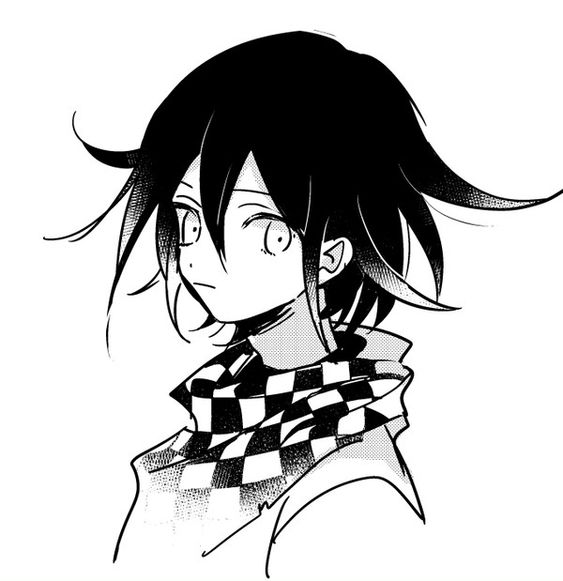

About Me
Hi, I'm Kensukeken, a painter artist and programmer as well lifelong learner. Welcome to my personal website where I showcase my work and share my thoughts.
My love for creativity and technology drives everything I do. Fluent in Turkmen, Arabic, and Turkish, I bring a unique cultural perspective to my work.
I've been playing Geometry Dash since 2015. I am all about creating awesome experiences through code and design. Feel free to check my Projects. Whether I'm painting a picture or making a game, sometimes LaTeX, I put my heart into it. When I'm not coding or painting, I like to explore new ideas, learn new stuff, or play some games. I have a diverse set of interests, including coding, drawing, and writing. I'm currently building new projects on bunch of languages. Welcome to my creative world!
